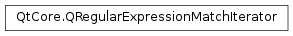

QRegularExpressionMatchIterator¶
Synopsis¶
Functions¶
- def
hasNext() - def
isValid() - def
matchOptions() - def
matchType() - def
next() - def
peekNext() - def
regularExpression() - def
swap(other)
Detailed Description¶
The
PySide2.QtCore.QRegularExpressionMatchIteratorclass provides an iterator on the results of a global match of aPySide2.QtCore.QRegularExpressionobject against a string.A
PySide2.QtCore.QRegularExpressionMatchIteratorobject is a forward only Java-like iterator; it can be obtained by calling theQRegularExpression.globalMatch()function. A newPySide2.QtCore.QRegularExpressionMatchIteratorwill be positioned before the first result. You can then call thePySide2.QtCore.QRegularExpressionMatchIterator.hasNext()function to check if there are more results available; if so, thePySide2.QtCore.QRegularExpressionMatchIterator.next()function will return the next result and advance the iterator.Each result is a
PySide2.QtCore.QRegularExpressionMatchobject holding all the information for that result (including captured substrings).For instance:
// extracts the words QRegularExpression re("(\\w+)"); QString subject("the quick fox"); QRegularExpressionMatchIterator i = re.globalMatch(subject); while (i.hasNext()) { QRegularExpressionMatch match = i.next(); // ... }Moreover,
PySide2.QtCore.QRegularExpressionMatchIteratoroffers aPySide2.QtCore.QRegularExpressionMatchIterator.peekNext()function to get the next result without advancing the iterator.You can retrieve the
PySide2.QtCore.QRegularExpressionobject the subject string was matched against by calling thePySide2.QtCore.QRegularExpressionMatchIterator.regularExpression()function; the match type and the match options are available as well by calling thePySide2.QtCore.QRegularExpressionMatchIterator.matchType()and thePySide2.QtCore.QRegularExpressionMatchIterator.matchOptions()respectively.Please refer to the
PySide2.QtCore.QRegularExpressiondocumentation for more information about the Qt regular expression classes.
-
class
PySide2.QtCore.QRegularExpressionMatchIterator¶ -
class
PySide2.QtCore.QRegularExpressionMatchIterator(iterator) Parameters: iterator – PySide2.QtCore.QRegularExpressionMatchIteratorConstructs an empty, valid
PySide2.QtCore.QRegularExpressionMatchIteratorobject. The regular expression is set to a default-constructed one; the match type toQRegularExpression.NoMatchand the match options toQRegularExpression.NoMatchOption.Invoking the
PySide2.QtCore.QRegularExpressionMatchIterator.hasNext()member function on the constructed object will return false, as the iterator is not iterating on a valid sequence of matches.Constructs a
PySide2.QtCore.QRegularExpressionMatchIteratorobject as a copy ofiterator.See also
PySide2.QtCore.QRegularExpressionMatchIterator.operator=()
-
PySide2.QtCore.QRegularExpressionMatchIterator.hasNext()¶ Return type: PySide2.QtCore.boolReturns
trueif there is at least one match result ahead of the iterator; otherwise it returnsfalse.
-
PySide2.QtCore.QRegularExpressionMatchIterator.isValid()¶ Return type: PySide2.QtCore.boolReturns
trueif the iterator object was obtained as a result from theQRegularExpression.globalMatch()function invoked on a validPySide2.QtCore.QRegularExpressionobject; returnsfalseif thePySide2.QtCore.QRegularExpressionwas invalid.
-
PySide2.QtCore.QRegularExpressionMatchIterator.matchOptions()¶ Return type: PySide2.QtCore.QRegularExpression.MatchOptionsReturns the match options that were used to get this
PySide2.QtCore.QRegularExpressionMatchIteratorobject, that is, the match options that were passed toQRegularExpression.globalMatch().
-
PySide2.QtCore.QRegularExpressionMatchIterator.matchType()¶ Return type: PySide2.QtCore.QRegularExpression.MatchTypeReturns the match type that was used to get this
PySide2.QtCore.QRegularExpressionMatchIteratorobject, that is, the match type that was passed toQRegularExpression.globalMatch().
-
PySide2.QtCore.QRegularExpressionMatchIterator.next()¶ Return type: PySide2.QtCore.QRegularExpressionMatchReturns the next match result and advances the iterator by one position.
Note
Calling this function when the iterator is at the end of the result set leads to undefined results.
-
PySide2.QtCore.QRegularExpressionMatchIterator.peekNext()¶ Return type: PySide2.QtCore.QRegularExpressionMatchReturns the next match result without moving the iterator.
Note
Calling this function when the iterator is at the end of the result set leads to undefined results.
-
PySide2.QtCore.QRegularExpressionMatchIterator.regularExpression()¶ Return type: PySide2.QtCore.QRegularExpressionReturns the
PySide2.QtCore.QRegularExpressionobject whose globalMatch() function returned this object.
-
PySide2.QtCore.QRegularExpressionMatchIterator.swap(other)¶ Parameters: other – PySide2.QtCore.QRegularExpressionMatchIteratorSwaps the iterator
otherwith this iterator object. This operation is very fast and never fails.
© 2018 The Qt Company Ltd. Documentation contributions included herein are the copyrights of their respective owners. The documentation provided herein is licensed under the terms of the GNU Free Documentation License version 1.3 as published by the Free Software Foundation. Qt and respective logos are trademarks of The Qt Company Ltd. in Finland and/or other countries worldwide. All other trademarks are property of their respective owners.